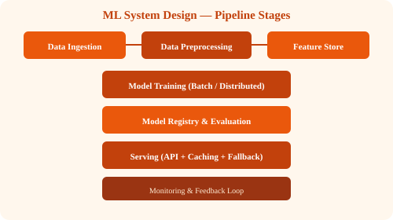

← Back to Tutorials

ML System Design – A Complete Guide (2026)
A comprehensive guide to designing production ML systems  from data pipelines and training to serving, monitoring, and interview prep.
Table of Contents
Part I: Foundations & Architecture
- 1. Introduction What is ML system design, importance, comparison with traditional systems
- 2. Core Objectives Scalability, latency, reliability, adaptability, explainability/fairness
- 3. Stages of ML Systems Data pipeline, training, serving
- 4. Step-by-Step Architecture Data ingestion, storage, preprocessing, training, deployment, serving, monitoring
- 5. Core Components Feature store, model registry, inference API, feedback loop
- 6. Batch vs Real-Time Systems Lambda/Kappa architectures, trade-offs
Part II: Training & Serving
- 7. Training Architecture Data parallelism, model parallelism, parameter servers, checkpointing
- 8. Serving Architecture Load balancer, inference API, caches, model servers, logging
- 9. Caching Strategies Feature, inference, model cache
- 10. Indexing Vector, inverted, hash indexing
- 11. Scalability Horizontal scaling, partitioning, queues, load balancing, auto-scaling
- 12. Fault Tolerance Replication, retries, fallback models, monitoring
Part III: Operations & Interview Prep
- 13. Monitoring & Drift Detection Accuracy metrics, latency, throughput, drift detection
- 14. Security & Privacy Encryption, RBAC, differential privacy, bias/fairness, compliance
- 15. Trade-Offs Accuracy vs latency, freshness vs stability, cost vs redundancy, consistency vs availability
- 16. Case Study Recommendation system with retrieval + ranking + caching
- 17. Interview Prep Roadmap Clarify, estimate scale, outline architecture, deep dive, trade-offs, reliability/ethics, improvements
- 18. FAQ Common questions about ML system design
- 19. Wrap-Up Key takeaways, resources, mindset